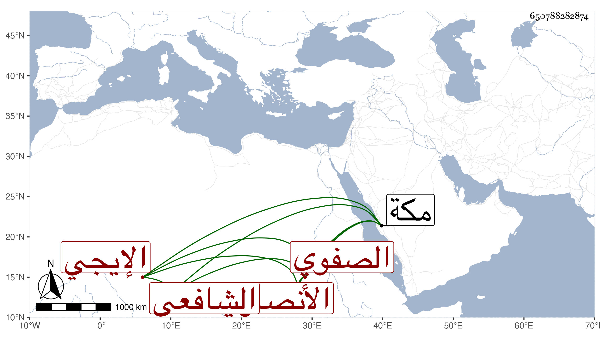

0902Sakhawi.DawLamic.ITO20230111-ara1.EIS1600.650788282874
Biography ID: 650788282874
8
محمد بن محمد بن محمد بن أبي نصر قطب الدين بن الشيخ المعتقد الشمس الأنصاري الإيجي الصفوي الشافعي الآتي أبوه . حج مع السيد أحمد بن صفي الدين الإيجي في سنة ثلاث وتسعين وجاور في التي بعدها وسمع مني أحاديث كالمسلسل وحديث زهير وحضر بعض الدروس بل سمع على الثلث الأخير من البخاري والنصف الأول من تصنيفي في ختمه وكتبت له إجازة في كراسة ودام حتى مات السيد المشار إليه بل تخلف بمكة ورأيته بها في سنة سبع وتسعين وهو متعلل وقيل لي أنه اشتغل بالكيمياء ولم يظفر منها بطائل إلا أنه افتقر جدا هذا مع فضيلته وحسن أدبه وكرم أصله فالله يحسن عاقبتنا وإياه ، وهو أخو عيان الماضي لأمه .
